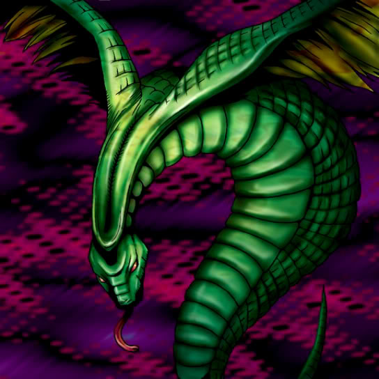

Sinister Serpent

Description: "Reduces opponent's Summoning Power to 0 when destroyed in battle."
STATS
ATK: 300
DEF: 250DECK COST
Deck Cost per Card: 11EFFECT NOT IMPLEMENTED
Fusion List (8 Possible Fusions)
- Sinister Serpent + Arlownay = Snakeyashi
- Sinister Serpent + Clown Zombie = Soul Hunter
- Sinister Serpent + Crass Clown = Soul Hunter
- Sinister Serpent + Dark Plant = Snakeyashi
- Sinister Serpent + Griggle = Snakeyashi
- Sinister Serpent + Mushroom Man = Snakeyashi
- Sinister Serpent + Rainbow Flower = Snakeyashi
- Sinister Serpent + Tentacle Plant = Snakeyashi